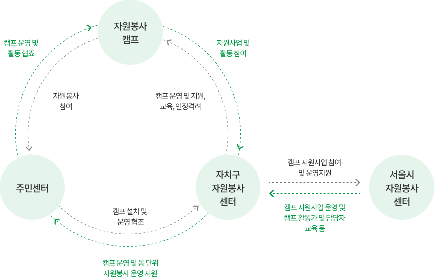
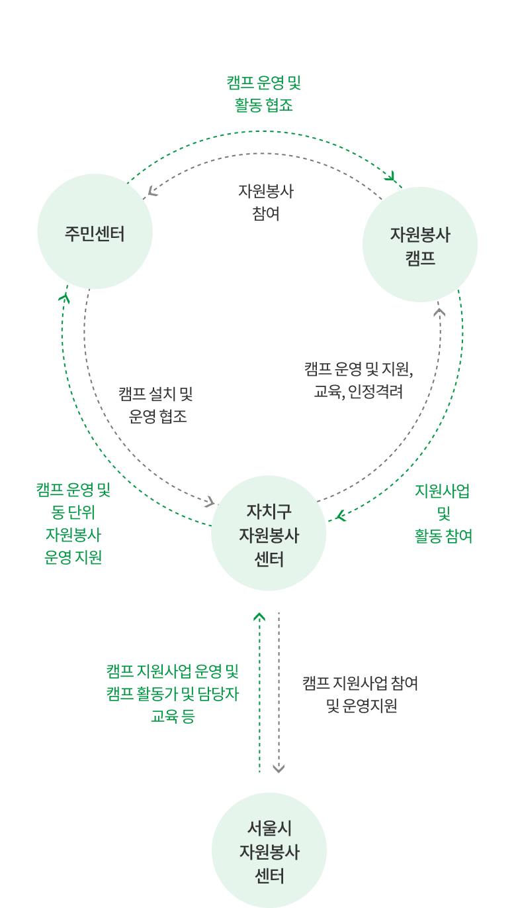

센터사업
자원봉사 캠프
-
자원봉사캠프란?
자원봉사센터 및 동 주민센터와의 협력관계를 기반으로 동단위 자원봉사 활성화를 촉진하는 자원봉사 거점입니다. (서울특별시 성동구 자원봉사활동 지원 조례 제3장 제11조의2)
동네 단위에서 신규 자원봉사자를 발굴하고 함께 봉사할 수 있도록 프로그램을 기획 및 연계하는 자원봉사 플랫폼입니다. -
자원봉사캠프의 지원 및
운영체계  -
자원봉사캠프 활동가
지역주민의 자원봉사활동을 지원하고, 지역문제나 현안 등을 봉사활동으로 연계하는 조력자를 말합니다.
TIPS '캠프 활동가' 이런 분에게 추천해요- 자원봉사활동 경험이 많은 사람 중 다른 사람의 봉사 참여에 관심이 있는 사람
- 동네에 사는 주민 중 지역사회에 대한 이해가 높고 애정이 있는 사람
- 동네에서 통·반장, 주민자치회, 직능단체 등 경험을 통해 자원봉사 리더십을 경험한 사람
- 자원봉사를 통해 우리 동네의 변화에 관심을 갖고 있는 사람
금호 옥수 권역
-
금호1가동
- 자원봉사자 상담 및 발굴
- 복지사각지대 발굴 및 프로그램 지원
-
금호2.3가동
- 복지사각지대 어르신 지원
- 취약계층 대상 정서적 지원 프로그램
-
금호4가동
- 어르신 전화안부 및 상담
- 취약계층 밑반찬 지원사업
- 취약계층 대상 정서적 지원 프로그램
-
옥수동
- 어르신 생신잔치
- 수세미 뜨개 및 나눔
마장 사근 송정 용답 권역
-
마장동
- 1인가구 건강식 및 식빵지원
- 마장동 축산시장연계 나눔활동
-
사근동
- 어르신 제철과일 나눔
- 환경 봉사활동
-
송정동
- 경로당 어르신 생신잔치
- 제빵나눔 봉사
-
용답동
- 어르신 안부 확인 및 나들이 활동
- 절기별 나눔행사 및 어르신 마당잔치
응봉 성수 권역
-
응봉동
- 어르신과 천연비누 및 모기퇴치제 만들기
- 김장행사 등
-
성수1가1동
- 주민센터 캠프 공간 운영
- 청소년과 함께하는 성수 플로깅
-
성수1가2동
- 복지사각지대 정서적 ·신체적 지원활동
- 어르신과 청소년이 함께하는 세대 간 나눔 봉사
-
성수2가1동
- 저소득층과 함께하는 고추장 담그기
- 어르신 가정방문 안부확인
왕십리 행당 권역
-
왕십리2동
- 계절별 김장 김치
- 경로당 밑반찬 나눔
-
행당1동
- 어르신 생신잔치 이미용 봉사
- 명절 먹거리 나눔 등
-
행당2동
- 어르신 상담 및 나들이 활동
- 복지사각지대 발굴 및 지원